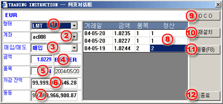

제한/정지 (Limit/Stop) 주문 실행하기
Limit/Stop 주문 완수를 위해서는 아래 단계들을 따라 주세요.
| 1 | 유형 - limit/stop 주문은 LMT를 선택 |
 제한
주문 진행/작성 대화창 |
| 2 | 계좌 - 주문에 대한 거래 계좌 선택 | |
| 3 | 비에스 - 주문에 대한 구매/판매 선택 | |
| 4 | 가격 - 거래 개시할 가격 입력 | |
| 5 | Lot - 거래에 대한 계약량 입력 | |
| 6 | 잔액 - 선택된 계좌의 한계 잔액 | |
| 7 | 순가 - 선택된 계좌의 한계 순가 | |
| 8 | 마감 - 거래이 청산 목적이면 개방 주문에 상응하는 양 입력 | |
| 9 | OCO - 주문이 청산 목적일시 OCO 주문 입력을 위한 버튼 | |
| 10 | Reset - 마감을 위해 입력된 양을 reset하기 위한 버튼 | |
| 11 | 제출(F8) - 거래 데스크에 주문을 제출하기 위한 버튼 | |
| 12 | 퇴장 - 거래 지시사항 대화창을 퇴장하기 위한 버튼 |
사용자는 주문이 최종적으로 거래 데스크에 놓이기 전에 주문 확인 대화창에서 주문이 제대로 되었는지 확인할 수 있다.
Stop/Limit이 성공적으로 거래 데스크에 놓이면, 수락을 표시할 참고 코드와 미확인 상황을 나타내는 주문이 실행 주문 패널에 리스트화 될 것이다. 미확인 상황은 주문이 실행을 위해 확인되지 않거나 취소되지 않는 한 보여질 것이다.
유의사항:
회사의 거래규칙에 따라, 사용자는 미확인 상태에 있을 때 limit/stop 주문 취소가 가능하다. 미확인 주문 취소하는 법 참조.